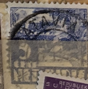
| SOURCE | TITLE| IMAGE MATCH | click to source page |
| eBay | US Postage Block of 4 3c Washington Saves his Army 1003 with Selvage | eBay | 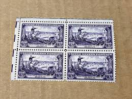 |
| eBay | USA 1940 Coronado and his Captains 3c Sc 898 Used Stamp - #E554 | eBay | 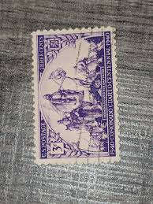 |
| Cherrystone Auctions | U.S. and Worldwide Stamps & Postal History - May 5-6, 2015 - AUSTRIA Semi-Postals | 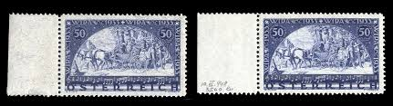 |
| Phila Shop (@stamps13125) • Facebook | 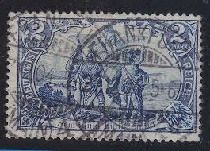 | |
| Redbubble | George Washington Saves His Army Brooklyn Vintage Postage Stamp" Greeting Card for Sale by Factory57 | Redbubble | 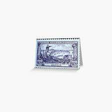 |
| Mystic Stamp | The Coronado Expedition | Mystic Stamp Discovery Center | 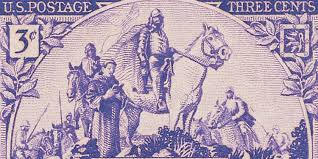 |
| eBay | 1894 Henry the Navigator,on his Ship,Portugal,Mi.99, 20R,VFU | eBay | 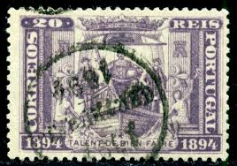 |
| Steve Malack | 898 F-VF OG NH (or better) Plate Block of 4 (stock photo - position and plate number collectors - please inquire for special requests) - Steve Malack | 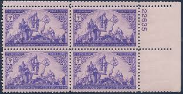 |
| Blogger.com | Big Blue 1840-1940: Norway 1928-1940+ & BOB | 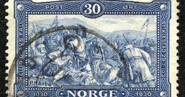 |
| WordPress.com | Tasmania #88 (1899) – A Stamp A Day | 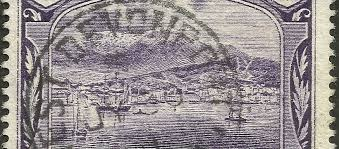 |
| Colnect | Stamp: Representations of the German Empire with overprint (Morocco, German Post OfficesMi:DR-MA 17I/I,Sn:DR-MA 17,Yt:DR-MA 17,Sg:DR-MA 17,AFA:DR-MA 17 📮 | 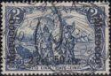 |
| eBay | France Scott B112-113 Mint Hinged - MH - CV 11.75$ | eBay | 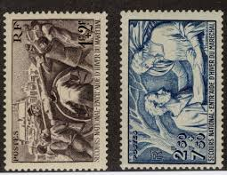 |
| eBay | Italy Scott # C26 VF-used neat cancel with nice color ! scv $ 600 ! see pic ! | eBay | 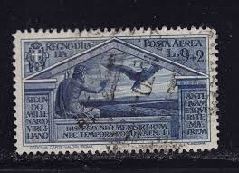 |
| Federal University of Agriculture, Abeokuta | GERMAN TURKEY STAMPS | 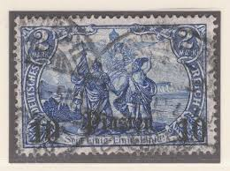 |
| eBay | Sg411 | eBay | 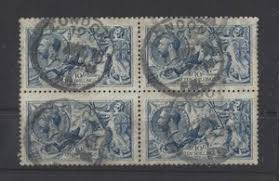 |
| eBay | Rare : 1898 Macau Sc# 69 - 2a Vasco da Gama series, common design. Used stamp | 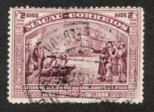 |
| eBay | Used Block Afghan Stamps for sale | eBay | 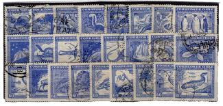 |
| eBay | India Postage / King George VI / Camel SG 234 / Used / One Stamp Only | eBay | 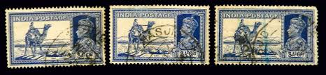 |
| Etsy | Coronado Cuarto Centennial Commemorative Full Sheet of 50 Vintage 1940 3-cent US Postage Stamps New Mexico Expedition Southwest Philately - Etsy | 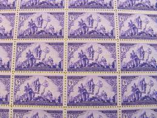 |
| eBay | US 3¢ stamp SC #1003 Washington Saves His Army MNH vertical or horizontal pair | eBay | 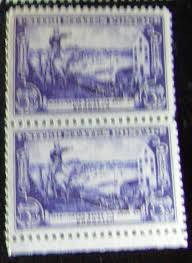 |
| eBay | Czechoslovakia #9 1918-19 200h Hradcany proof PRINTED DOUBLE strip of 3 | eBay | 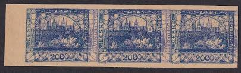 |
| eBay | 1924 Italy Sc# B24 Semi-postal, Holy Year , Religion. Used Cv$40 | eBay | 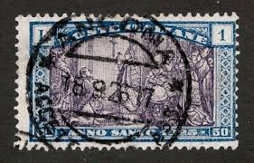 |
| eBay | 3 Cent Unused US Military, War Stamps 1941-Now for sale | eBay | 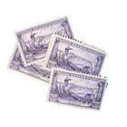 |
| eBay | AUSTRIA WIPA MI# 556 C -PAIR - FAKSIMILE - NEUDRUK - @1 | eBay | 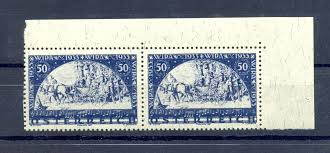 |
| eBay | Planche de 12 timbres - Catholique Eglise Prêtres Foch Pie XI Cardinal Verdier.. | eBay | 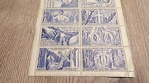 |
| eBay | 1929 'R' Italy 5 Lire Coin ( Edge * FERT * ) 5.0 Grams .835 Silver 4 Stamp1929 | eBay | 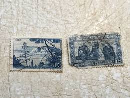 |
| eBay | Yugoslavia 1950 - Local Economy - 100 pieces of the same used stamp - Bundle | eBay | 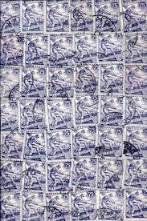 |
| iStock | Guineabissau Guineabissau Peso 500 Banknotes Five Hundred Guineabissau Peso Closeup And Macro View Of The Guineabissau Peso Tracking And Dolly Shots 500 Guineabissau Peso Banknote Observe And Reserve Side Guineabissau Peso Money | 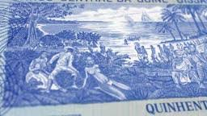 |
| Dorotheum | Österr. - WIPA glatt im senkr. Eckrandpaar, - Briefmarken und Ansichtskarten 2023/12/27 - Realized price: EUR 100 - Dorotheum | 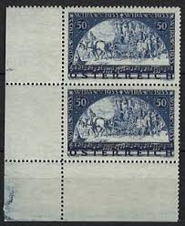 |
| Huntington Stamp & Coin | 739a Vertical pair imperf horizontal. Very choice . Photocopy of Phil — Huntington Stamp & Coin Shop | 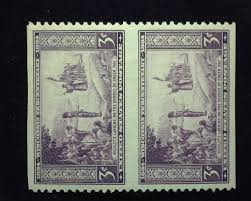 |
| eBay | Germany Stamps Deutsches Reich 3 Mark Mi. Nr. 96 BIIb (17871) | eBay | 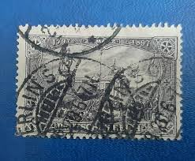 |
| eBay UK | 4 Number Stamp Blocks for sale | eBay UK | 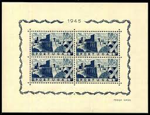 |
| eBay | Specimen, Portugal Azores Sc424 Tile Used in Esperanca Monastery, Block | eBay | 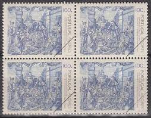 |
| eBay | US 1942 Scott#: 898 - Coronado Expedition BLOCK OF 4 MNH | eBay | 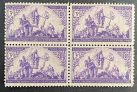 |
| eBay | Stamp Germany Deutsches Reich REICHSPOST 2 Mark 1900 Mi. Nr. 64 (34176) | eBay | 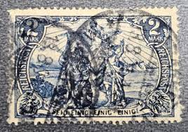 |
| eBay | RUSSIA,USSR:1933 SC#497 Used Peoples of the Soviet Union Georgians AR642 | eBay | 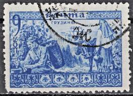 |
| postagestampsgalore.co.uk | French Stamps | Stamp collecting near me | 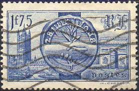 |
| Mark Brandon Stamps | 1934 10/- Indigo Seahorse Used Block | 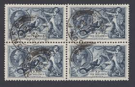 |
| eBay | Italien Michelnummer 349 gestempelt | eBay | 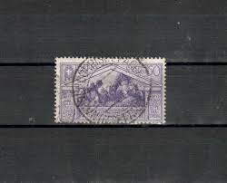 |
| eBay | Stamp Germany Memel Lithuania Klaipėda 1,25 Mark 1920 Mi. Nr. 27 (29086) | eBay | 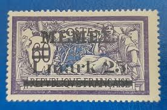 |
| eBay | DR-WEimar 79 GOTISCHE INSCHRIFT gest. 130EUR (y73937 | eBay | 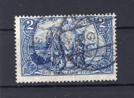 |
| philatelie-pilatte-stamps.com | France 497/98 | 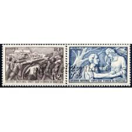 |
| eBay | F-EX42256 ESPAÑA SPAIN 1938 MNH 1 pta BLOCK OF 10 BENEFICENCIA ORPHANTS AIRPLANE | eBay | 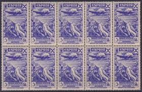 |
| eBay | SCOTT STAMP # 898 CORONADO 3 CENT PLATE BLOCK - MNH | eBay | 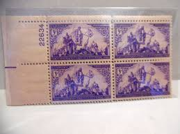 |
| Cherrystone Auctions | U.S. & Worldwide Stamps & Postal History - March 18-19, 2014 - DANZIG | 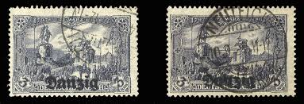 |
| eBay | Used Error, Variety Stamps for sale | eBay | 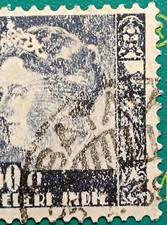 |
| Todocolección | sello de españa 1939 homenaje al ejercito 10 ct - Buy Used stamps of Franco and the Spanish State on todocoleccion | 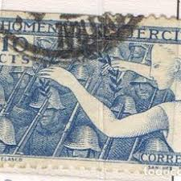 |
| Manresa Jesuit Retreat House | José de Anchieta, SJ | 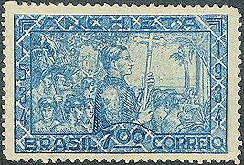 |
| eBay | Stamp Germany Deutsches Reich Germania 2 Mark 1916 Mi. Nr. 95 (26542) | eBay | 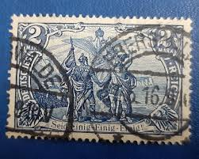 |
| eBay | Austria stamps 1933,MNH, ANK#555&556,WIPA, set of 2,ordinary and fiber paper | eBay | |
| eBay | Portugal stamps 1946 MI Bloc 10 MNH VF | eBay | |
| Cherrystone Auctions | U.S. & Worldwide Stamps & Postal History - June 3-4, 2009 - RUSSIA | |
| Stamp Auction Network | Prices Realized | |
| eBay | u2608/ Austria (2 stk) Poster Stamp Label # Soldier & Horse at Aspern | eBay | |
| eBay | US Stamps, Scott #898 3c 1940 block of 6 Coronado and his captains F/VF M/NH | eBay | |
| Can you spot the error | ||
| eBay | GREAT BRITAIN SCOTT# 175b USED VF LOT# 72568 | eBay | |
| Wikimedia.org | File:Pav-Stamp.jpg - Wikimedia Commons | |
| eBay | Portugal stamps 1946 MI Bloc 10 MLH VF stamps MNH | eBay | |
| eBay | Germany #196 1922-23 20M used block of 4 | eBay |
{kind=link}